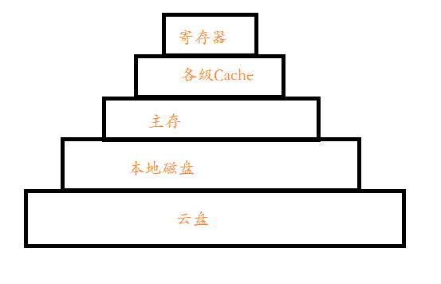

5G会带来哪些技术发展
网速已不是桎梏，那桎梏在哪里？
前言
5G会带来哪些技术发展？这个问题在看到华为1月13日深圳首测5G新闻时便在思考。和别人交流时也不经意间挑起了这个话题，想借此机会写一写。当然这仅代表个人看法，很有可能有些观点是不对的，也欢迎大家在评论区共同探讨。
5G有什么新特性
我们知道3G、4G，那5G就是下一代（next generation）移动通信技术了。
可能会对某些名词很陌生，不过一些比较值得我们关心的特性还是比较清楚的。
1月14日央视新闻公众号发表了一篇文章《比Wi-Fi快60多倍，比高清清晰4倍！5G+4K，是时候“种草”了！》。值得我们关注的就是网速。
速度有多快
5G理论速率峰值达10Gb/s，1.25GB/s，50GB的游戏1分钟之内下完。当然这只是理论上的峰值，一般是低于峰值的，需要考虑信号强弱和网络拥塞等情况。
相对应的，现在用的比较多的是如下几种媒介：
- 家用千兆带宽（并不常见），理论速率峰值1Gb/s，0.125GB/s，50GB的游戏需下载近10分钟。
- 主流手机连Wi-Fi理论速率峰值150Mb/s，18.75MB/s，50G游戏下载近1小时
- 家庭常用100M宽带，理论速率峰值100Mb/s，12.5MB/s，50G游戏下载1-2小时
- 4G网络，理论速率峰值同家用100M宽带
不足
由于物理波段的限制，也将会与其他通信技术并用，包含长距离的其他传统电信波段。
带来的技术发展——云硬盘（实现真正的存储器层次结构最后一层）
这是我想到的第一条，而且应该是应用更为大众化的。而且不仅仅是云硬盘，与之相连的一系列云服务都会大量使用，因为网速不再是瓶颈，云服务和本地服务几乎没有差距，而且云服务计算可能更为迅速。能观看高质量视频、VR视频等都是网速加快直接导致的结果，在此不谈。
为什么是云硬盘呢？
谈到硬盘，这就想到了去年买iPad2018，32GB本地存储存存文档还可以，小电影能存得了几部？（兄嘚，评论区借一部说话？ :smile:）
最终说动我自己下定决心的就是想到了存储器层次结构（本地存储不够，那就百度云呗。按局部性原理需求换入换出）
存储器层次结构：

5G时代的到来，打破了网速的桎梏，这不就是实现了真正的存储器层次结构的最后一层吗？
这一系列与云硬盘相关的技术的有哪些？
- 云硬盘，当做本地磁盘的大众使用
- 云应用
- 简单的Webapp、小程序的大型化
- Native APP和PC APP的云应用化，需要一套解决方案来解决云端和本地的换入换出问题（是直接传输已安装的二进制+配置文件还是每次都需要安装？）
- 云游戏，这既包含NativeAPP还有PC端还有各种平台的云游戏。这不最近腾讯出了个云游戏服务平台CMatrix
- 好吧，暂时想不出来还有啥了
总结
回到一开始的问题：网速已不是桎梏，那桎梏在哪里？硬件和软件，网络协议能不能有更好的更快速的更安全的算法；硬件能不能更快一点。
第一次写这种主观性的技术文章，可能有些逻辑和文章结构可能不够严谨。如果有什么好的建议请在评论区和右下角DAOVoice联系。多谢！